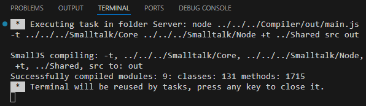
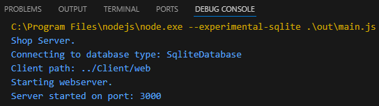
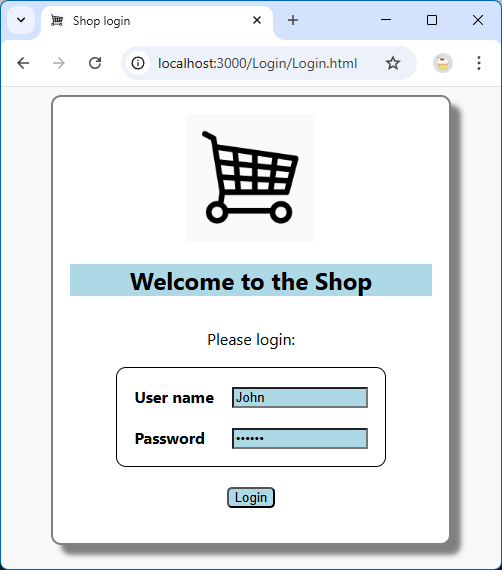

Building and starting.
In VSCode, press [F5] to build and start the server.
The VSCode Terminal pane should look something like this:

The VSCode Debug Console should look like this:

Now open a web browser and type this URL in the address bar:
localhost:3000 and press [Enter].
The result should look something like this:

You can now login by just clicking on the [Login] button (the password is pre-set).
That will take you to the Products page.
You can click on Orders to display the Orders page.
Great, now that everything is working correctly,
let's check out what went on in the server app under the hood.